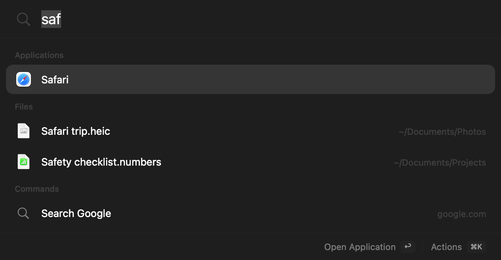

One shortcut for your apps, files, sums, and windows.
Press ⌥Space, type what you want, and press Return. Jevcast opens apps, finds files, answers sums and conversions, moves windows, and brings back what you copied.
Free under the MIT license macOS 14 or later Apple silicon and Intel Build needs Xcode 26 or later on a supported Mac
Try a query

Closed, as after Escape. Press ⌥Space or click the keys to open it again.
Type what you want. Press Return.
Results appear as you type. Apps and actions you use often move up the list. Right-click an app to keep it in your favourites.
In the launcher: ↩ open, ↑↓ select, esc close, ⌘K more actions, ⌘Y Quick Look, ⌘R show in Finder, ⌘⇧C copy the path.
| You type | You get |
|---|---|
| Apps | |
safari |
Opens Safari. Aliases you add in Settings work too. |
time |
Finds FaceTime by a word inside its name. |
| Files | |
invoice |
Files and folders with “invoice” in the name. |
kind:pdf in:downloads |
PDFs in your Downloads folder. |
files modified today |
Files you changed today. |
| Sums and conversions | |
12 * (8 + 2) |
120. Return copies the answer. |
10 km in mi |
6.2137 mi. Mass, temperature, time, data, volume, speed, and area work too. |
| Windows | |
left half |
The window you were using fills the left half of the screen. |
next monitor |
The window moves to your other display. |
| Web | |
gh swiftui |
A GitHub search for “swiftui”. yt,
maps, and wiki work too, and you can
add your own.
|
example.com |
Opens the site in your browser. |
| Clipboard and settings | |
clip |
The last 50 text items you copied. |
wi-fi settings |
The Wi-Fi page of System Settings. |
Move windows from the keyboard.
Type a layout such as left half, or hold ⌃⌥⌘ and press one key. Press a half again to
cycle its size: 1/2, 2/3, then 1/3.
Window control needs Accessibility access. Snapping windows at screen edges is optional. If you also use Rectangle, turn off one app’s shortcuts, so the two apps do not move the same window.
What leaves your Mac
No account, no analytics, and no crash reports. The app goes online for three things only, and the source code for each one is public.
| Feature | When | Sent to | What is sent |
|---|---|---|---|
| Update check | Once a day, while “Check for updates automatically” is on. It is on by default. | api.github.com |
A request for the newest version number. GitHub sees your IP address, as with any web request. Nothing is downloaded. Read the code |
| Natural language | Only after you add your own TypeSafe key and turn it on. It is off by default. | api.typesafe.ai |
The text you typed and a short list of candidate names. Never file paths, folders, or audio. The reply can only choose one of those candidates. Read the code |
| Web search | When you choose a web search or a URL. | Your browser | Only what you chose to open. |
Everything else stays on your Mac. File search uses the Spotlight index. Voice uses on-device speech recognition and saves no audio. Clipboard history is kept in memory and never written to disk.
Install
-
Clone the official source
On a Mac that can run Xcode 26 or later, clone github.com/RyanErkal/jevcast. Verify the remote before you run the build.
-
Test and build
Run
swift testandscripts/build.sh. Verify the app code signature before you install it. -
Install and open
Copy
dist/Jevcast.appto Applications without deleting existing settings, then open it.
Install with an agent
Install Jevcast from the official source repository:
https://github.com/RyanErkal/jevcast. Check that this Mac
can run Xcode 26 or later and has it installed; otherwise
stop and report the requirement. Clone the repository and
check out its latest published release tag; if there is no
release tag, stop. Verify that `git remote get-url origin` resolves exactly to
`https://github.com/RyanErkal/jevcast.git`, run `swift test`
and `scripts/build.sh`, then verify the app with `codesign
--verify --deep --strict --verbose=2
"dist/Jevcast.app"`. After those checks pass, quit any running
Jev Launcher or Jevcast. Back up an existing
`/Applications/Jevcast.app` before replacing it, keep all
preferences and settings, install the new app, and open it. Do not bypass
Gatekeeper or change macOS security settings.
Build it yourself
git clone https://github.com/RyanErkal/jevcast.git
cd jevcast
scripts/build.shNeeds Xcode 26 or later. The README has the details.
Requires macOS 14 Sonoma or later, on Apple silicon or Intel.
Questions
Does it replace Spotlight or Raycast?
It works next to them and never changes their shortcuts. The shortcut is ⌥Space. If another app already uses it, choose a different shortcut in the welcome window or in Settings.
Why does it ask for Accessibility access?
Only to move and resize windows. If you do not use window layouts, skip it. Everything else works without it.
Does it search inside documents?
No. It searches file names, kinds, folders, and dates from the Spotlight index, in the folders you choose in Settings.
What is Jev?
Jev is an optional model from TypeSafe. With your own TypeSafe API key, it matches loose requests, such as “make this window bigger”, to one of the app’s known actions. It is off by default, and the app works fully without it.
How do updates work?
Once a day, the app asks GitHub if there is a newer version and tells you when there is. You download the update yourself. Turn the check off in Settings, General.
How do I remove it?
Quit it from the menu bar and move it from Applications to the
Trash. To remove its settings too, delete
~/Library/Preferences/com.ryanerkal.jevlauncher.plist
and ~/Library/Caches/JevLauncher. If you saved a
TypeSafe key, remove it in Settings, Input, first.
Is it really free?
Yes. The code is open source under the MIT license. You can read it, build it, and change it on GitHub.
Build it from source, then press ⌥Space
Install from sourceFree under the MIT license macOS 14 or later Apple silicon and Intel